|
abhijat [at] cmu [dot] edu
Hey there! I'm Abhijat Biswas. I currently lead the AI efforts at Clementine, where we are building voice-to-code agents to bring alive game companions.
Previously, I've spent time teaching neural nets to recognize free hand sketches at IISc Bangalore. I've also worked on using temporal smoothness in videos as supervision for neural networks at Cardiff University. I went to IIT Guwahati for ECE. |
Updates
[Sept '24] |
We've been working on a new method and dataset for measuring drivers' situational awareness (and its transitions) from their eye gaze. The paper will appear at CoRL '24 and the project website is here. |
[Sept '24] |
Happy to announce our work last summer in the new arXiv paper Modeling Drivers' Risk Perception via Attention to Improve Driving Assistance (w/ TRI). We leverage a transformer based predictor to model how risky the drivers' perception of on-road events is using gaze to reason about their model of other agents. |
[Aug '24] |
I just defended -- offically graduating and filled with gratitute towards everyone who contributed to this journey! My thesis "Eye Gaze for Intelligent Driving" can be found here. |
[Jan '24] |
We just released a dataset and method for estimating the importance of driving objects with a view towards triaging for driver assistance. The RA-L paper is out now! |
[Jun '23] |
Presented our work on the characterizing of human peripheral vision during driving for intelligent driving assistance at IV 2023 in beautiful Anchorage! |
[May '23] |
Starting a research internship at Toyota Research Institute, working on object-based representations of driver awareness. Excited to be in Cambridge! |
[Dec '22] |
Our work on using using driver eye gaze as a supervisor for imitation learned driving won best paper at the Aligning Robot Representations with Humans workshop at CoRL 2022! |
Click for more updates
[Mar '23] |
Proposed my PhD thesis -- offically a PhD candidate! You can email me to watch a recording of my talk "Eye Gaze for Intelligent Driving". |
[Dec '22] |
Organized the Attention Learning Workshop at NeurIPS '22 . |
[May '22] |
Grateful to have won a Modeling, Simulation, and Training Fellowship to support my PhD research -- thank you to the Link Foundation! |
[Mar '22] |
Presented our VR driving simulator DReyeVR at HRI 2023 -- available on GitHub! |
[Jun '22] |
Starting a research internship at Bosch, exploring the use of human driver eye gaze for supervising imitation learned driving agents. |
Research(*) denotes equal contribution |
| 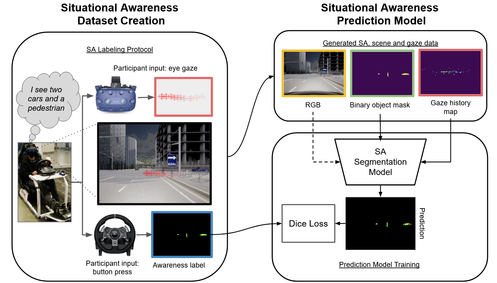 |
We collect drivers' object-level situational awareness (SA) data via a novel interactive protocol in a VR driving simulator. We use the generated data to train a driver SA predictor from visual scene context and driver eye gaze.
Casting this as a semantic segmentation problem allows our model to use global scene context and local gaze-object relationships together, processing the whole scene at once regardless of the number of objects present.
|
| 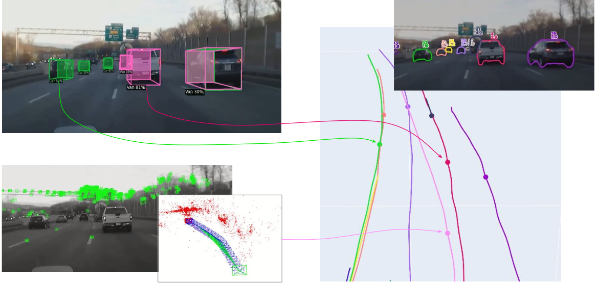 | |
| 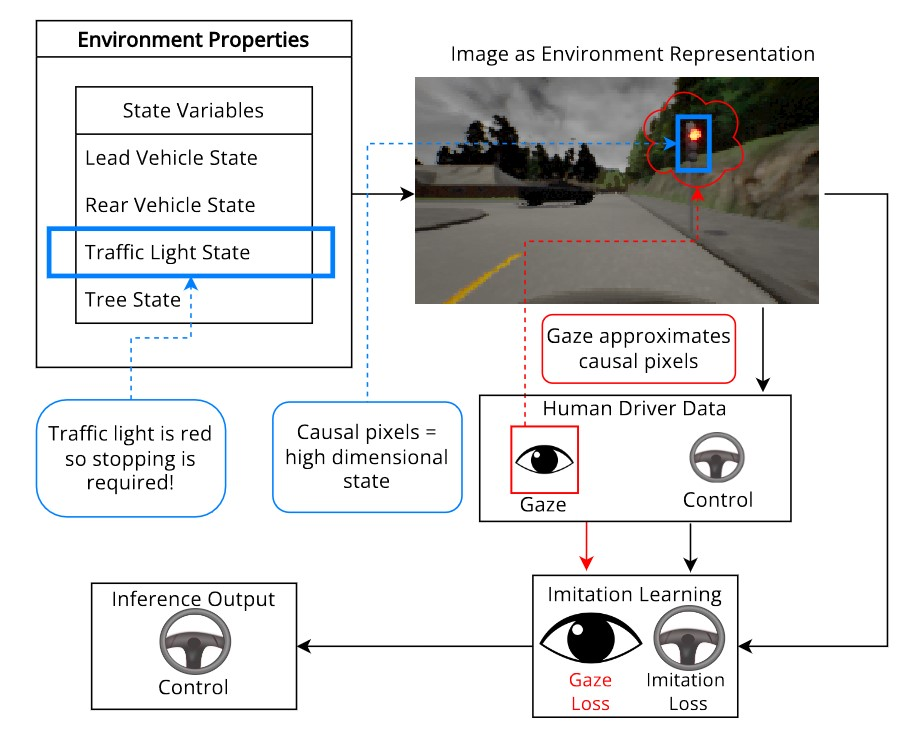 |
While driving, human drivers naturally exhibit an easily obtained, continuous signal that is highly correlated with causal elements of the state
space: eye gaze. How can we use it as a supervisory signal?
|

|
The ability to identify important objects in a complex and dynamic driving environment can help assistive driving systems decide when to alert drivers.
We tackle object importance estimation in a data-driven fashion and introduce HOIST - Human-annotated Object Importance in Simulated Traffic.
HOIST contains driving scenarios with human-annotated importance labels for vehicles and pedestrians.
We additionally propose a novel approach that relies on counterfactual reasoning to estimate an object's importance.
We generate counterfactual scenarios by modifying the motion of objects and ascribe importance based on how the modifications affect the ego vehicle's driving.
Our approach outperforms strong baselines for the task of object importance estimation on HOIST. |
| 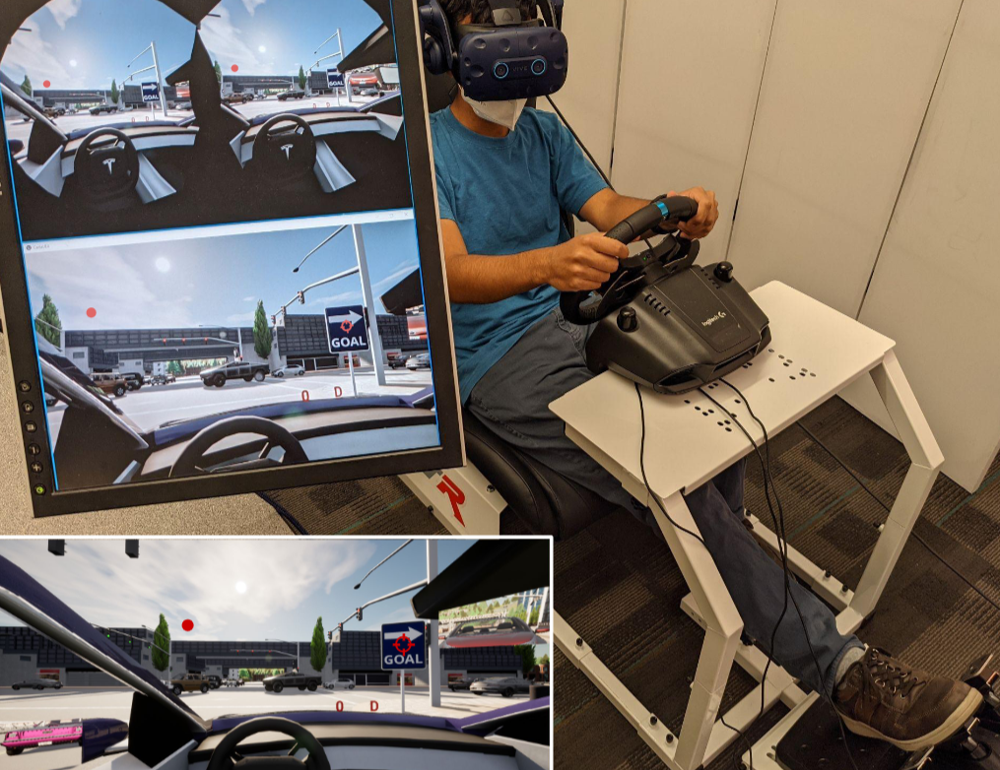 |
We find that driver peripheral vision is vertically asymmetrical -- more peripheral stimuli are missed
in the upper portion of drivers FoV (only while driving).
Also, right after saccades (eye movements), driver peripheral vision degrades.
|
| 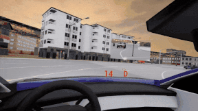 |
We open-source DReyeVR, our VR-based driving simulator built with human-centric research in mind.
It's based on CARLA -- if CARLA is for algorithmic drivers, DReyeVR is for humans.
The hardware setup is affordable for many academic labs, costing under 5000 USD.
|
| 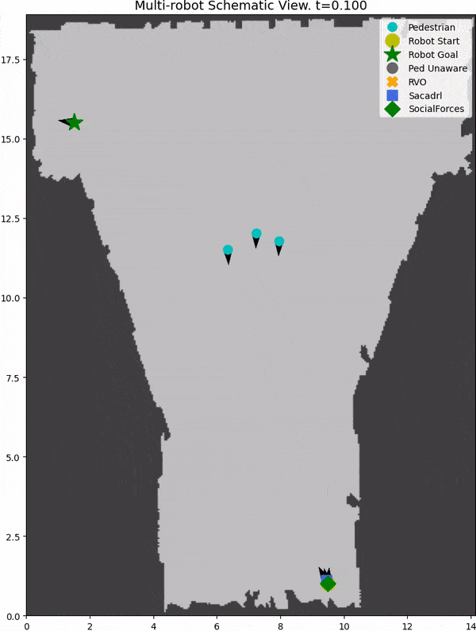 |
We introduce SocNavBench, a simulation framework for evaluating social navigation algorithms in a consistent and interpretable manner.
It has a simulator with photo-realistic capabilities, curated social navigation scenarios grounded in real-world pedestrian data, and a suite of metrics that is auto-computed.
Try it out to evaluate your own social navigation algorithms!
|
| 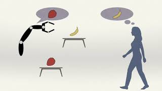 |
Does preemptive robot assistance change human decision making?
We show in an experiment (N=99), that people's decision making in a selection task
does change in response to anticipatory robot assistance, but predicting the direction of change is difficult.
|

|
|
| 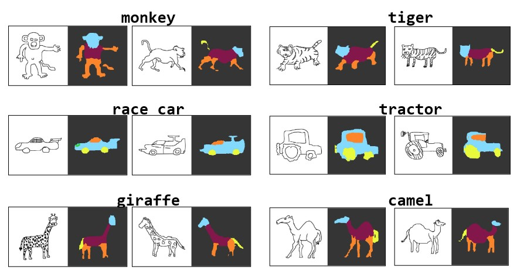 |
Can we use neural networks to semantically parse freehand sketches?
We show this is possible by "sketchifying" natural images to generate training data and employing a graphical model for generating descriptions.
|
| 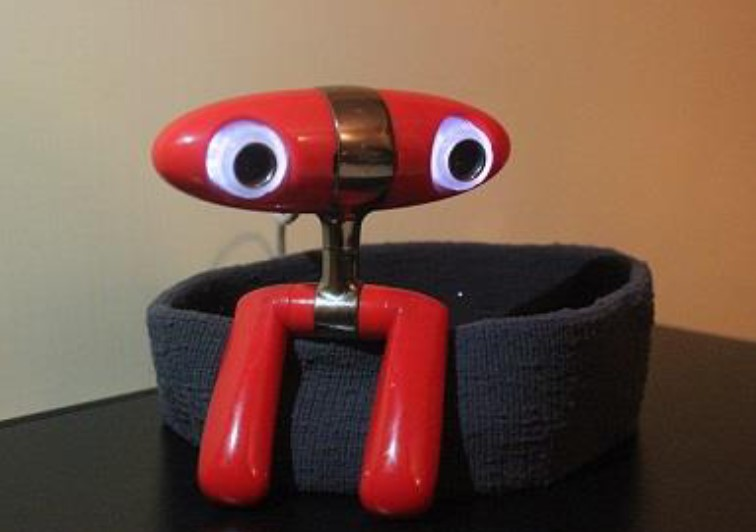 |
Other projects |
| 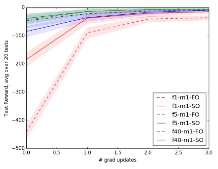 |
|
| 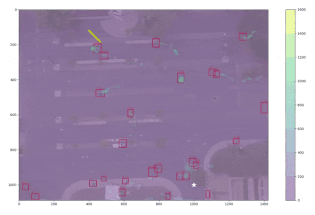 |
|
| 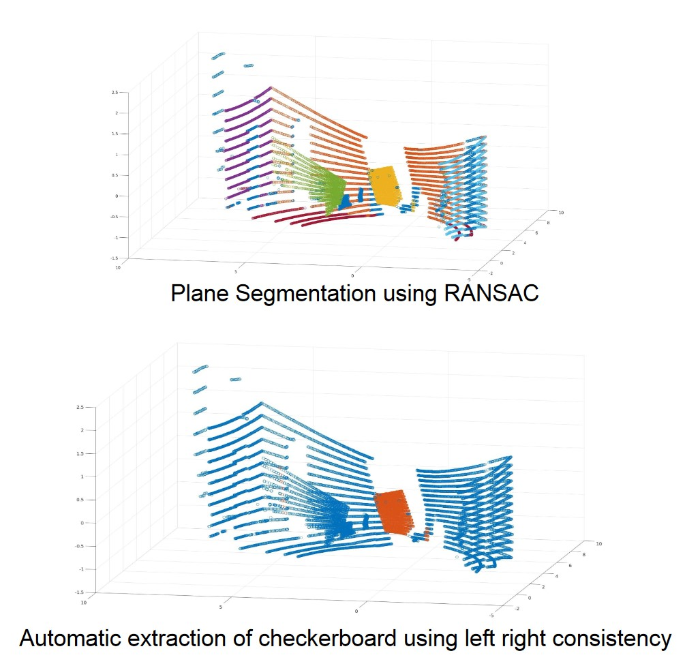 |
|
|
Last updated: Feb '24 |